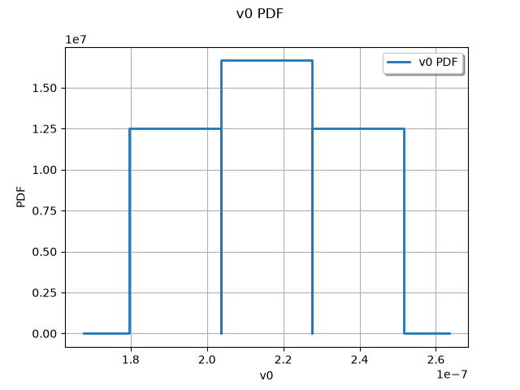

Note
Go to the end to download the full example code.
Run simulations with FMUPointToFieldFunction#
Prerequisites#
Load the following libraries :
import openturns as ot
import openturns.viewer as viewer
import otfmi
import otfmi.example.utility
from os.path import abspath
Run simulations#
Instead of loading the model with otfmi.fmi.load_fmu,
you can load it with the higher level object
FMUPointToFieldFunction.
It enables you to use OpenTURNS’ high level algorithms by wrapping the FMU
into an openturns.Function object.
So, let’s load the FMU deviation.fmu.
Recall the deviation model is static, i.e. its output does not evolve over
time.
path_fmu = otfmi.example.utility.get_path_fmu("deviation")
function = otfmi.FMUPointToFieldFunction(
path_fmu, inputs_fmu=["E", "F", "L", "I"], outputs_fmu=["y"]
)
Simulate the FMU on a point
inputPoint = ot.Point([3.0e7, 30000, 200, 400])
outputPoint = function(inputPoint)[-1]
print(f"y = {outputPoint}")
y = [6.66667]
Prepare the sample
inputSample = ot.Sample(
[[3.0e7, 29000, 200, 400],
[3.1e7, 30000, 250, 450],
[2.9e7, 30000, 300, 350]]
)
inputSample.setDescription(["E", "F", "L", "I"])
Now, simulate the FMU on the sample. The printed output show you 3 series of results, from the 3 points in the sample. Why do we get series ? Because, even with a time-independent model like here, the simulation is time dependant, and last here 1s.
outputSample = function(inputSample)
print(outputSample)
[field 0:
[ t y ]
0 : [ 0 6.44444 ]
1 : [ 0.002 6.44444 ]
2 : [ 0.004 6.44444 ]
3 : [ 0.006 6.44444 ]
4 : [ 0.008 6.44444 ]
5 : [ 0.01 6.44444 ]
6 : [ 0.012 6.44444 ]
7 : [ 0.014 6.44444 ]
8 : [ 0.016 6.44444 ]
9 : [ 0.018 6.44444 ]
10 : [ 0.02 6.44444 ]
11 : [ 0.022 6.44444 ]
12 : [ 0.024 6.44444 ]
13 : [ 0.026 6.44444 ]
14 : [ 0.028 6.44444 ]
15 : [ 0.03 6.44444 ]
16 : [ 0.032 6.44444 ]
17 : [ 0.034 6.44444 ]
18 : [ 0.036 6.44444 ]
19 : [ 0.038 6.44444 ]
20 : [ 0.04 6.44444 ]
21 : [ 0.042 6.44444 ]
22 : [ 0.044 6.44444 ]
23 : [ 0.046 6.44444 ]
24 : [ 0.048 6.44444 ]
25 : [ 0.05 6.44444 ]
26 : [ 0.052 6.44444 ]
27 : [ 0.054 6.44444 ]
28 : [ 0.056 6.44444 ]
29 : [ 0.058 6.44444 ]
30 : [ 0.06 6.44444 ]
31 : [ 0.062 6.44444 ]
32 : [ 0.064 6.44444 ]
33 : [ 0.066 6.44444 ]
34 : [ 0.068 6.44444 ]
35 : [ 0.07 6.44444 ]
36 : [ 0.072 6.44444 ]
37 : [ 0.074 6.44444 ]
38 : [ 0.076 6.44444 ]
39 : [ 0.078 6.44444 ]
40 : [ 0.08 6.44444 ]
41 : [ 0.082 6.44444 ]
42 : [ 0.084 6.44444 ]
43 : [ 0.086 6.44444 ]
44 : [ 0.088 6.44444 ]
45 : [ 0.09 6.44444 ]
46 : [ 0.092 6.44444 ]
47 : [ 0.094 6.44444 ]
48 : [ 0.096 6.44444 ]
49 : [ 0.098 6.44444 ]
50 : [ 0.1 6.44444 ]
51 : [ 0.102 6.44444 ]
52 : [ 0.104 6.44444 ]
53 : [ 0.106 6.44444 ]
54 : [ 0.108 6.44444 ]
55 : [ 0.11 6.44444 ]
56 : [ 0.112 6.44444 ]
57 : [ 0.114 6.44444 ]
58 : [ 0.116 6.44444 ]
59 : [ 0.118 6.44444 ]
60 : [ 0.12 6.44444 ]
61 : [ 0.122 6.44444 ]
62 : [ 0.124 6.44444 ]
63 : [ 0.126 6.44444 ]
64 : [ 0.128 6.44444 ]
65 : [ 0.13 6.44444 ]
66 : [ 0.132 6.44444 ]
67 : [ 0.134 6.44444 ]
68 : [ 0.136 6.44444 ]
69 : [ 0.138 6.44444 ]
70 : [ 0.14 6.44444 ]
71 : [ 0.142 6.44444 ]
72 : [ 0.144 6.44444 ]
73 : [ 0.146 6.44444 ]
74 : [ 0.148 6.44444 ]
75 : [ 0.15 6.44444 ]
76 : [ 0.152 6.44444 ]
77 : [ 0.154 6.44444 ]
78 : [ 0.156 6.44444 ]
79 : [ 0.158 6.44444 ]
80 : [ 0.16 6.44444 ]
81 : [ 0.162 6.44444 ]
82 : [ 0.164 6.44444 ]
83 : [ 0.166 6.44444 ]
84 : [ 0.168 6.44444 ]
85 : [ 0.17 6.44444 ]
86 : [ 0.172 6.44444 ]
87 : [ 0.174 6.44444 ]
88 : [ 0.176 6.44444 ]
89 : [ 0.178 6.44444 ]
90 : [ 0.18 6.44444 ]
91 : [ 0.182 6.44444 ]
92 : [ 0.184 6.44444 ]
93 : [ 0.186 6.44444 ]
94 : [ 0.188 6.44444 ]
95 : [ 0.19 6.44444 ]
96 : [ 0.192 6.44444 ]
97 : [ 0.194 6.44444 ]
98 : [ 0.196 6.44444 ]
99 : [ 0.198 6.44444 ]
100 : [ 0.2 6.44444 ]
101 : [ 0.202 6.44444 ]
102 : [ 0.204 6.44444 ]
103 : [ 0.206 6.44444 ]
104 : [ 0.208 6.44444 ]
105 : [ 0.21 6.44444 ]
106 : [ 0.212 6.44444 ]
107 : [ 0.214 6.44444 ]
108 : [ 0.216 6.44444 ]
109 : [ 0.218 6.44444 ]
110 : [ 0.22 6.44444 ]
111 : [ 0.222 6.44444 ]
112 : [ 0.224 6.44444 ]
113 : [ 0.226 6.44444 ]
114 : [ 0.228 6.44444 ]
115 : [ 0.23 6.44444 ]
116 : [ 0.232 6.44444 ]
117 : [ 0.234 6.44444 ]
118 : [ 0.236 6.44444 ]
119 : [ 0.238 6.44444 ]
120 : [ 0.24 6.44444 ]
121 : [ 0.242 6.44444 ]
122 : [ 0.244 6.44444 ]
123 : [ 0.246 6.44444 ]
124 : [ 0.248 6.44444 ]
125 : [ 0.25 6.44444 ]
126 : [ 0.252 6.44444 ]
127 : [ 0.254 6.44444 ]
128 : [ 0.256 6.44444 ]
129 : [ 0.258 6.44444 ]
130 : [ 0.26 6.44444 ]
131 : [ 0.262 6.44444 ]
132 : [ 0.264 6.44444 ]
133 : [ 0.266 6.44444 ]
134 : [ 0.268 6.44444 ]
135 : [ 0.27 6.44444 ]
136 : [ 0.272 6.44444 ]
137 : [ 0.274 6.44444 ]
138 : [ 0.276 6.44444 ]
139 : [ 0.278 6.44444 ]
140 : [ 0.28 6.44444 ]
141 : [ 0.282 6.44444 ]
142 : [ 0.284 6.44444 ]
143 : [ 0.286 6.44444 ]
144 : [ 0.288 6.44444 ]
145 : [ 0.29 6.44444 ]
146 : [ 0.292 6.44444 ]
147 : [ 0.294 6.44444 ]
148 : [ 0.296 6.44444 ]
149 : [ 0.298 6.44444 ]
150 : [ 0.3 6.44444 ]
151 : [ 0.302 6.44444 ]
152 : [ 0.304 6.44444 ]
153 : [ 0.306 6.44444 ]
154 : [ 0.308 6.44444 ]
155 : [ 0.31 6.44444 ]
156 : [ 0.312 6.44444 ]
157 : [ 0.314 6.44444 ]
158 : [ 0.316 6.44444 ]
159 : [ 0.318 6.44444 ]
160 : [ 0.32 6.44444 ]
161 : [ 0.322 6.44444 ]
162 : [ 0.324 6.44444 ]
163 : [ 0.326 6.44444 ]
164 : [ 0.328 6.44444 ]
165 : [ 0.33 6.44444 ]
166 : [ 0.332 6.44444 ]
167 : [ 0.334 6.44444 ]
168 : [ 0.336 6.44444 ]
169 : [ 0.338 6.44444 ]
170 : [ 0.34 6.44444 ]
171 : [ 0.342 6.44444 ]
172 : [ 0.344 6.44444 ]
173 : [ 0.346 6.44444 ]
174 : [ 0.348 6.44444 ]
175 : [ 0.35 6.44444 ]
176 : [ 0.352 6.44444 ]
177 : [ 0.354 6.44444 ]
178 : [ 0.356 6.44444 ]
179 : [ 0.358 6.44444 ]
180 : [ 0.36 6.44444 ]
181 : [ 0.362 6.44444 ]
182 : [ 0.364 6.44444 ]
183 : [ 0.366 6.44444 ]
184 : [ 0.368 6.44444 ]
185 : [ 0.37 6.44444 ]
186 : [ 0.372 6.44444 ]
187 : [ 0.374 6.44444 ]
188 : [ 0.376 6.44444 ]
189 : [ 0.378 6.44444 ]
190 : [ 0.38 6.44444 ]
191 : [ 0.382 6.44444 ]
192 : [ 0.384 6.44444 ]
193 : [ 0.386 6.44444 ]
194 : [ 0.388 6.44444 ]
195 : [ 0.39 6.44444 ]
196 : [ 0.392 6.44444 ]
197 : [ 0.394 6.44444 ]
198 : [ 0.396 6.44444 ]
199 : [ 0.398 6.44444 ]
200 : [ 0.4 6.44444 ]
201 : [ 0.402 6.44444 ]
202 : [ 0.404 6.44444 ]
203 : [ 0.406 6.44444 ]
204 : [ 0.408 6.44444 ]
205 : [ 0.41 6.44444 ]
206 : [ 0.412 6.44444 ]
207 : [ 0.414 6.44444 ]
208 : [ 0.416 6.44444 ]
209 : [ 0.418 6.44444 ]
210 : [ 0.42 6.44444 ]
211 : [ 0.422 6.44444 ]
212 : [ 0.424 6.44444 ]
213 : [ 0.426 6.44444 ]
214 : [ 0.428 6.44444 ]
215 : [ 0.43 6.44444 ]
216 : [ 0.432 6.44444 ]
217 : [ 0.434 6.44444 ]
218 : [ 0.436 6.44444 ]
219 : [ 0.438 6.44444 ]
220 : [ 0.44 6.44444 ]
221 : [ 0.442 6.44444 ]
222 : [ 0.444 6.44444 ]
223 : [ 0.446 6.44444 ]
224 : [ 0.448 6.44444 ]
225 : [ 0.45 6.44444 ]
226 : [ 0.452 6.44444 ]
227 : [ 0.454 6.44444 ]
228 : [ 0.456 6.44444 ]
229 : [ 0.458 6.44444 ]
230 : [ 0.46 6.44444 ]
231 : [ 0.462 6.44444 ]
232 : [ 0.464 6.44444 ]
233 : [ 0.466 6.44444 ]
234 : [ 0.468 6.44444 ]
235 : [ 0.47 6.44444 ]
236 : [ 0.472 6.44444 ]
237 : [ 0.474 6.44444 ]
238 : [ 0.476 6.44444 ]
239 : [ 0.478 6.44444 ]
240 : [ 0.48 6.44444 ]
241 : [ 0.482 6.44444 ]
242 : [ 0.484 6.44444 ]
243 : [ 0.486 6.44444 ]
244 : [ 0.488 6.44444 ]
245 : [ 0.49 6.44444 ]
246 : [ 0.492 6.44444 ]
247 : [ 0.494 6.44444 ]
248 : [ 0.496 6.44444 ]
249 : [ 0.498 6.44444 ]
250 : [ 0.5 6.44444 ]
251 : [ 0.502 6.44444 ]
252 : [ 0.504 6.44444 ]
253 : [ 0.506 6.44444 ]
254 : [ 0.508 6.44444 ]
255 : [ 0.51 6.44444 ]
256 : [ 0.512 6.44444 ]
257 : [ 0.514 6.44444 ]
258 : [ 0.516 6.44444 ]
259 : [ 0.518 6.44444 ]
260 : [ 0.52 6.44444 ]
261 : [ 0.522 6.44444 ]
262 : [ 0.524 6.44444 ]
263 : [ 0.526 6.44444 ]
264 : [ 0.528 6.44444 ]
265 : [ 0.53 6.44444 ]
266 : [ 0.532 6.44444 ]
267 : [ 0.534 6.44444 ]
268 : [ 0.536 6.44444 ]
269 : [ 0.538 6.44444 ]
270 : [ 0.54 6.44444 ]
271 : [ 0.542 6.44444 ]
272 : [ 0.544 6.44444 ]
273 : [ 0.546 6.44444 ]
274 : [ 0.548 6.44444 ]
275 : [ 0.55 6.44444 ]
276 : [ 0.552 6.44444 ]
277 : [ 0.554 6.44444 ]
278 : [ 0.556 6.44444 ]
279 : [ 0.558 6.44444 ]
280 : [ 0.56 6.44444 ]
281 : [ 0.562 6.44444 ]
282 : [ 0.564 6.44444 ]
283 : [ 0.566 6.44444 ]
284 : [ 0.568 6.44444 ]
285 : [ 0.57 6.44444 ]
286 : [ 0.572 6.44444 ]
287 : [ 0.574 6.44444 ]
288 : [ 0.576 6.44444 ]
289 : [ 0.578 6.44444 ]
290 : [ 0.58 6.44444 ]
291 : [ 0.582 6.44444 ]
292 : [ 0.584 6.44444 ]
293 : [ 0.586 6.44444 ]
294 : [ 0.588 6.44444 ]
295 : [ 0.59 6.44444 ]
296 : [ 0.592 6.44444 ]
297 : [ 0.594 6.44444 ]
298 : [ 0.596 6.44444 ]
299 : [ 0.598 6.44444 ]
300 : [ 0.6 6.44444 ]
301 : [ 0.602 6.44444 ]
302 : [ 0.604 6.44444 ]
303 : [ 0.606 6.44444 ]
304 : [ 0.608 6.44444 ]
305 : [ 0.61 6.44444 ]
306 : [ 0.612 6.44444 ]
307 : [ 0.614 6.44444 ]
308 : [ 0.616 6.44444 ]
309 : [ 0.618 6.44444 ]
310 : [ 0.62 6.44444 ]
311 : [ 0.622 6.44444 ]
312 : [ 0.624 6.44444 ]
313 : [ 0.626 6.44444 ]
314 : [ 0.628 6.44444 ]
315 : [ 0.63 6.44444 ]
316 : [ 0.632 6.44444 ]
317 : [ 0.634 6.44444 ]
318 : [ 0.636 6.44444 ]
319 : [ 0.638 6.44444 ]
320 : [ 0.64 6.44444 ]
321 : [ 0.642 6.44444 ]
322 : [ 0.644 6.44444 ]
323 : [ 0.646 6.44444 ]
324 : [ 0.648 6.44444 ]
325 : [ 0.65 6.44444 ]
326 : [ 0.652 6.44444 ]
327 : [ 0.654 6.44444 ]
328 : [ 0.656 6.44444 ]
329 : [ 0.658 6.44444 ]
330 : [ 0.66 6.44444 ]
331 : [ 0.662 6.44444 ]
332 : [ 0.664 6.44444 ]
333 : [ 0.666 6.44444 ]
334 : [ 0.668 6.44444 ]
335 : [ 0.67 6.44444 ]
336 : [ 0.672 6.44444 ]
337 : [ 0.674 6.44444 ]
338 : [ 0.676 6.44444 ]
339 : [ 0.678 6.44444 ]
340 : [ 0.68 6.44444 ]
341 : [ 0.682 6.44444 ]
342 : [ 0.684 6.44444 ]
343 : [ 0.686 6.44444 ]
344 : [ 0.688 6.44444 ]
345 : [ 0.69 6.44444 ]
346 : [ 0.692 6.44444 ]
347 : [ 0.694 6.44444 ]
348 : [ 0.696 6.44444 ]
349 : [ 0.698 6.44444 ]
350 : [ 0.7 6.44444 ]
351 : [ 0.702 6.44444 ]
352 : [ 0.704 6.44444 ]
353 : [ 0.706 6.44444 ]
354 : [ 0.708 6.44444 ]
355 : [ 0.71 6.44444 ]
356 : [ 0.712 6.44444 ]
357 : [ 0.714 6.44444 ]
358 : [ 0.716 6.44444 ]
359 : [ 0.718 6.44444 ]
360 : [ 0.72 6.44444 ]
361 : [ 0.722 6.44444 ]
362 : [ 0.724 6.44444 ]
363 : [ 0.726 6.44444 ]
364 : [ 0.728 6.44444 ]
365 : [ 0.73 6.44444 ]
366 : [ 0.732 6.44444 ]
367 : [ 0.734 6.44444 ]
368 : [ 0.736 6.44444 ]
369 : [ 0.738 6.44444 ]
370 : [ 0.74 6.44444 ]
371 : [ 0.742 6.44444 ]
372 : [ 0.744 6.44444 ]
373 : [ 0.746 6.44444 ]
374 : [ 0.748 6.44444 ]
375 : [ 0.75 6.44444 ]
376 : [ 0.752 6.44444 ]
377 : [ 0.754 6.44444 ]
378 : [ 0.756 6.44444 ]
379 : [ 0.758 6.44444 ]
380 : [ 0.76 6.44444 ]
381 : [ 0.762 6.44444 ]
382 : [ 0.764 6.44444 ]
383 : [ 0.766 6.44444 ]
384 : [ 0.768 6.44444 ]
385 : [ 0.77 6.44444 ]
386 : [ 0.772 6.44444 ]
387 : [ 0.774 6.44444 ]
388 : [ 0.776 6.44444 ]
389 : [ 0.778 6.44444 ]
390 : [ 0.78 6.44444 ]
391 : [ 0.782 6.44444 ]
392 : [ 0.784 6.44444 ]
393 : [ 0.786 6.44444 ]
394 : [ 0.788 6.44444 ]
395 : [ 0.79 6.44444 ]
396 : [ 0.792 6.44444 ]
397 : [ 0.794 6.44444 ]
398 : [ 0.796 6.44444 ]
399 : [ 0.798 6.44444 ]
400 : [ 0.8 6.44444 ]
401 : [ 0.802 6.44444 ]
402 : [ 0.804 6.44444 ]
403 : [ 0.806 6.44444 ]
404 : [ 0.808 6.44444 ]
405 : [ 0.81 6.44444 ]
406 : [ 0.812 6.44444 ]
407 : [ 0.814 6.44444 ]
408 : [ 0.816 6.44444 ]
409 : [ 0.818 6.44444 ]
410 : [ 0.82 6.44444 ]
411 : [ 0.822 6.44444 ]
412 : [ 0.824 6.44444 ]
413 : [ 0.826 6.44444 ]
414 : [ 0.828 6.44444 ]
415 : [ 0.83 6.44444 ]
416 : [ 0.832 6.44444 ]
417 : [ 0.834 6.44444 ]
418 : [ 0.836 6.44444 ]
419 : [ 0.838 6.44444 ]
420 : [ 0.84 6.44444 ]
421 : [ 0.842 6.44444 ]
422 : [ 0.844 6.44444 ]
423 : [ 0.846 6.44444 ]
424 : [ 0.848 6.44444 ]
425 : [ 0.85 6.44444 ]
426 : [ 0.852 6.44444 ]
427 : [ 0.854 6.44444 ]
428 : [ 0.856 6.44444 ]
429 : [ 0.858 6.44444 ]
430 : [ 0.86 6.44444 ]
431 : [ 0.862 6.44444 ]
432 : [ 0.864 6.44444 ]
433 : [ 0.866 6.44444 ]
434 : [ 0.868 6.44444 ]
435 : [ 0.87 6.44444 ]
436 : [ 0.872 6.44444 ]
437 : [ 0.874 6.44444 ]
438 : [ 0.876 6.44444 ]
439 : [ 0.878 6.44444 ]
440 : [ 0.88 6.44444 ]
441 : [ 0.882 6.44444 ]
442 : [ 0.884 6.44444 ]
443 : [ 0.886 6.44444 ]
444 : [ 0.888 6.44444 ]
445 : [ 0.89 6.44444 ]
446 : [ 0.892 6.44444 ]
447 : [ 0.894 6.44444 ]
448 : [ 0.896 6.44444 ]
449 : [ 0.898 6.44444 ]
450 : [ 0.9 6.44444 ]
451 : [ 0.902 6.44444 ]
452 : [ 0.904 6.44444 ]
453 : [ 0.906 6.44444 ]
454 : [ 0.908 6.44444 ]
455 : [ 0.91 6.44444 ]
456 : [ 0.912 6.44444 ]
457 : [ 0.914 6.44444 ]
458 : [ 0.916 6.44444 ]
459 : [ 0.918 6.44444 ]
460 : [ 0.92 6.44444 ]
461 : [ 0.922 6.44444 ]
462 : [ 0.924 6.44444 ]
463 : [ 0.926 6.44444 ]
464 : [ 0.928 6.44444 ]
465 : [ 0.93 6.44444 ]
466 : [ 0.932 6.44444 ]
467 : [ 0.934 6.44444 ]
468 : [ 0.936 6.44444 ]
469 : [ 0.938 6.44444 ]
470 : [ 0.94 6.44444 ]
471 : [ 0.942 6.44444 ]
472 : [ 0.944 6.44444 ]
473 : [ 0.946 6.44444 ]
474 : [ 0.948 6.44444 ]
475 : [ 0.95 6.44444 ]
476 : [ 0.952 6.44444 ]
477 : [ 0.954 6.44444 ]
478 : [ 0.956 6.44444 ]
479 : [ 0.958 6.44444 ]
480 : [ 0.96 6.44444 ]
481 : [ 0.962 6.44444 ]
482 : [ 0.964 6.44444 ]
483 : [ 0.966 6.44444 ]
484 : [ 0.968 6.44444 ]
485 : [ 0.97 6.44444 ]
486 : [ 0.972 6.44444 ]
487 : [ 0.974 6.44444 ]
488 : [ 0.976 6.44444 ]
489 : [ 0.978 6.44444 ]
490 : [ 0.98 6.44444 ]
491 : [ 0.982 6.44444 ]
492 : [ 0.984 6.44444 ]
493 : [ 0.986 6.44444 ]
494 : [ 0.988 6.44444 ]
495 : [ 0.99 6.44444 ]
496 : [ 0.992 6.44444 ]
497 : [ 0.994 6.44444 ]
498 : [ 0.996 6.44444 ]
499 : [ 0.998 6.44444 ]
500 : [ 1 6.44444 ]
field 1:
[ t y ]
0 : [ 0 11.2007 ]
1 : [ 0.002 11.2007 ]
2 : [ 0.004 11.2007 ]
3 : [ 0.006 11.2007 ]
4 : [ 0.008 11.2007 ]
5 : [ 0.01 11.2007 ]
6 : [ 0.012 11.2007 ]
7 : [ 0.014 11.2007 ]
8 : [ 0.016 11.2007 ]
9 : [ 0.018 11.2007 ]
10 : [ 0.02 11.2007 ]
11 : [ 0.022 11.2007 ]
12 : [ 0.024 11.2007 ]
13 : [ 0.026 11.2007 ]
14 : [ 0.028 11.2007 ]
15 : [ 0.03 11.2007 ]
16 : [ 0.032 11.2007 ]
17 : [ 0.034 11.2007 ]
18 : [ 0.036 11.2007 ]
19 : [ 0.038 11.2007 ]
20 : [ 0.04 11.2007 ]
21 : [ 0.042 11.2007 ]
22 : [ 0.044 11.2007 ]
23 : [ 0.046 11.2007 ]
24 : [ 0.048 11.2007 ]
25 : [ 0.05 11.2007 ]
26 : [ 0.052 11.2007 ]
27 : [ 0.054 11.2007 ]
28 : [ 0.056 11.2007 ]
29 : [ 0.058 11.2007 ]
30 : [ 0.06 11.2007 ]
31 : [ 0.062 11.2007 ]
32 : [ 0.064 11.2007 ]
33 : [ 0.066 11.2007 ]
34 : [ 0.068 11.2007 ]
35 : [ 0.07 11.2007 ]
36 : [ 0.072 11.2007 ]
37 : [ 0.074 11.2007 ]
38 : [ 0.076 11.2007 ]
39 : [ 0.078 11.2007 ]
40 : [ 0.08 11.2007 ]
41 : [ 0.082 11.2007 ]
42 : [ 0.084 11.2007 ]
43 : [ 0.086 11.2007 ]
44 : [ 0.088 11.2007 ]
45 : [ 0.09 11.2007 ]
46 : [ 0.092 11.2007 ]
47 : [ 0.094 11.2007 ]
48 : [ 0.096 11.2007 ]
49 : [ 0.098 11.2007 ]
50 : [ 0.1 11.2007 ]
51 : [ 0.102 11.2007 ]
52 : [ 0.104 11.2007 ]
53 : [ 0.106 11.2007 ]
54 : [ 0.108 11.2007 ]
55 : [ 0.11 11.2007 ]
56 : [ 0.112 11.2007 ]
57 : [ 0.114 11.2007 ]
58 : [ 0.116 11.2007 ]
59 : [ 0.118 11.2007 ]
60 : [ 0.12 11.2007 ]
61 : [ 0.122 11.2007 ]
62 : [ 0.124 11.2007 ]
63 : [ 0.126 11.2007 ]
64 : [ 0.128 11.2007 ]
65 : [ 0.13 11.2007 ]
66 : [ 0.132 11.2007 ]
67 : [ 0.134 11.2007 ]
68 : [ 0.136 11.2007 ]
69 : [ 0.138 11.2007 ]
70 : [ 0.14 11.2007 ]
71 : [ 0.142 11.2007 ]
72 : [ 0.144 11.2007 ]
73 : [ 0.146 11.2007 ]
74 : [ 0.148 11.2007 ]
75 : [ 0.15 11.2007 ]
76 : [ 0.152 11.2007 ]
77 : [ 0.154 11.2007 ]
78 : [ 0.156 11.2007 ]
79 : [ 0.158 11.2007 ]
80 : [ 0.16 11.2007 ]
81 : [ 0.162 11.2007 ]
82 : [ 0.164 11.2007 ]
83 : [ 0.166 11.2007 ]
84 : [ 0.168 11.2007 ]
85 : [ 0.17 11.2007 ]
86 : [ 0.172 11.2007 ]
87 : [ 0.174 11.2007 ]
88 : [ 0.176 11.2007 ]
89 : [ 0.178 11.2007 ]
90 : [ 0.18 11.2007 ]
91 : [ 0.182 11.2007 ]
92 : [ 0.184 11.2007 ]
93 : [ 0.186 11.2007 ]
94 : [ 0.188 11.2007 ]
95 : [ 0.19 11.2007 ]
96 : [ 0.192 11.2007 ]
97 : [ 0.194 11.2007 ]
98 : [ 0.196 11.2007 ]
99 : [ 0.198 11.2007 ]
100 : [ 0.2 11.2007 ]
101 : [ 0.202 11.2007 ]
102 : [ 0.204 11.2007 ]
103 : [ 0.206 11.2007 ]
104 : [ 0.208 11.2007 ]
105 : [ 0.21 11.2007 ]
106 : [ 0.212 11.2007 ]
107 : [ 0.214 11.2007 ]
108 : [ 0.216 11.2007 ]
109 : [ 0.218 11.2007 ]
110 : [ 0.22 11.2007 ]
111 : [ 0.222 11.2007 ]
112 : [ 0.224 11.2007 ]
113 : [ 0.226 11.2007 ]
114 : [ 0.228 11.2007 ]
115 : [ 0.23 11.2007 ]
116 : [ 0.232 11.2007 ]
117 : [ 0.234 11.2007 ]
118 : [ 0.236 11.2007 ]
119 : [ 0.238 11.2007 ]
120 : [ 0.24 11.2007 ]
121 : [ 0.242 11.2007 ]
122 : [ 0.244 11.2007 ]
123 : [ 0.246 11.2007 ]
124 : [ 0.248 11.2007 ]
125 : [ 0.25 11.2007 ]
126 : [ 0.252 11.2007 ]
127 : [ 0.254 11.2007 ]
128 : [ 0.256 11.2007 ]
129 : [ 0.258 11.2007 ]
130 : [ 0.26 11.2007 ]
131 : [ 0.262 11.2007 ]
132 : [ 0.264 11.2007 ]
133 : [ 0.266 11.2007 ]
134 : [ 0.268 11.2007 ]
135 : [ 0.27 11.2007 ]
136 : [ 0.272 11.2007 ]
137 : [ 0.274 11.2007 ]
138 : [ 0.276 11.2007 ]
139 : [ 0.278 11.2007 ]
140 : [ 0.28 11.2007 ]
141 : [ 0.282 11.2007 ]
142 : [ 0.284 11.2007 ]
143 : [ 0.286 11.2007 ]
144 : [ 0.288 11.2007 ]
145 : [ 0.29 11.2007 ]
146 : [ 0.292 11.2007 ]
147 : [ 0.294 11.2007 ]
148 : [ 0.296 11.2007 ]
149 : [ 0.298 11.2007 ]
150 : [ 0.3 11.2007 ]
151 : [ 0.302 11.2007 ]
152 : [ 0.304 11.2007 ]
153 : [ 0.306 11.2007 ]
154 : [ 0.308 11.2007 ]
155 : [ 0.31 11.2007 ]
156 : [ 0.312 11.2007 ]
157 : [ 0.314 11.2007 ]
158 : [ 0.316 11.2007 ]
159 : [ 0.318 11.2007 ]
160 : [ 0.32 11.2007 ]
161 : [ 0.322 11.2007 ]
162 : [ 0.324 11.2007 ]
163 : [ 0.326 11.2007 ]
164 : [ 0.328 11.2007 ]
165 : [ 0.33 11.2007 ]
166 : [ 0.332 11.2007 ]
167 : [ 0.334 11.2007 ]
168 : [ 0.336 11.2007 ]
169 : [ 0.338 11.2007 ]
170 : [ 0.34 11.2007 ]
171 : [ 0.342 11.2007 ]
172 : [ 0.344 11.2007 ]
173 : [ 0.346 11.2007 ]
174 : [ 0.348 11.2007 ]
175 : [ 0.35 11.2007 ]
176 : [ 0.352 11.2007 ]
177 : [ 0.354 11.2007 ]
178 : [ 0.356 11.2007 ]
179 : [ 0.358 11.2007 ]
180 : [ 0.36 11.2007 ]
181 : [ 0.362 11.2007 ]
182 : [ 0.364 11.2007 ]
183 : [ 0.366 11.2007 ]
184 : [ 0.368 11.2007 ]
185 : [ 0.37 11.2007 ]
186 : [ 0.372 11.2007 ]
187 : [ 0.374 11.2007 ]
188 : [ 0.376 11.2007 ]
189 : [ 0.378 11.2007 ]
190 : [ 0.38 11.2007 ]
191 : [ 0.382 11.2007 ]
192 : [ 0.384 11.2007 ]
193 : [ 0.386 11.2007 ]
194 : [ 0.388 11.2007 ]
195 : [ 0.39 11.2007 ]
196 : [ 0.392 11.2007 ]
197 : [ 0.394 11.2007 ]
198 : [ 0.396 11.2007 ]
199 : [ 0.398 11.2007 ]
200 : [ 0.4 11.2007 ]
201 : [ 0.402 11.2007 ]
202 : [ 0.404 11.2007 ]
203 : [ 0.406 11.2007 ]
204 : [ 0.408 11.2007 ]
205 : [ 0.41 11.2007 ]
206 : [ 0.412 11.2007 ]
207 : [ 0.414 11.2007 ]
208 : [ 0.416 11.2007 ]
209 : [ 0.418 11.2007 ]
210 : [ 0.42 11.2007 ]
211 : [ 0.422 11.2007 ]
212 : [ 0.424 11.2007 ]
213 : [ 0.426 11.2007 ]
214 : [ 0.428 11.2007 ]
215 : [ 0.43 11.2007 ]
216 : [ 0.432 11.2007 ]
217 : [ 0.434 11.2007 ]
218 : [ 0.436 11.2007 ]
219 : [ 0.438 11.2007 ]
220 : [ 0.44 11.2007 ]
221 : [ 0.442 11.2007 ]
222 : [ 0.444 11.2007 ]
223 : [ 0.446 11.2007 ]
224 : [ 0.448 11.2007 ]
225 : [ 0.45 11.2007 ]
226 : [ 0.452 11.2007 ]
227 : [ 0.454 11.2007 ]
228 : [ 0.456 11.2007 ]
229 : [ 0.458 11.2007 ]
230 : [ 0.46 11.2007 ]
231 : [ 0.462 11.2007 ]
232 : [ 0.464 11.2007 ]
233 : [ 0.466 11.2007 ]
234 : [ 0.468 11.2007 ]
235 : [ 0.47 11.2007 ]
236 : [ 0.472 11.2007 ]
237 : [ 0.474 11.2007 ]
238 : [ 0.476 11.2007 ]
239 : [ 0.478 11.2007 ]
240 : [ 0.48 11.2007 ]
241 : [ 0.482 11.2007 ]
242 : [ 0.484 11.2007 ]
243 : [ 0.486 11.2007 ]
244 : [ 0.488 11.2007 ]
245 : [ 0.49 11.2007 ]
246 : [ 0.492 11.2007 ]
247 : [ 0.494 11.2007 ]
248 : [ 0.496 11.2007 ]
249 : [ 0.498 11.2007 ]
250 : [ 0.5 11.2007 ]
251 : [ 0.502 11.2007 ]
252 : [ 0.504 11.2007 ]
253 : [ 0.506 11.2007 ]
254 : [ 0.508 11.2007 ]
255 : [ 0.51 11.2007 ]
256 : [ 0.512 11.2007 ]
257 : [ 0.514 11.2007 ]
258 : [ 0.516 11.2007 ]
259 : [ 0.518 11.2007 ]
260 : [ 0.52 11.2007 ]
261 : [ 0.522 11.2007 ]
262 : [ 0.524 11.2007 ]
263 : [ 0.526 11.2007 ]
264 : [ 0.528 11.2007 ]
265 : [ 0.53 11.2007 ]
266 : [ 0.532 11.2007 ]
267 : [ 0.534 11.2007 ]
268 : [ 0.536 11.2007 ]
269 : [ 0.538 11.2007 ]
270 : [ 0.54 11.2007 ]
271 : [ 0.542 11.2007 ]
272 : [ 0.544 11.2007 ]
273 : [ 0.546 11.2007 ]
274 : [ 0.548 11.2007 ]
275 : [ 0.55 11.2007 ]
276 : [ 0.552 11.2007 ]
277 : [ 0.554 11.2007 ]
278 : [ 0.556 11.2007 ]
279 : [ 0.558 11.2007 ]
280 : [ 0.56 11.2007 ]
281 : [ 0.562 11.2007 ]
282 : [ 0.564 11.2007 ]
283 : [ 0.566 11.2007 ]
284 : [ 0.568 11.2007 ]
285 : [ 0.57 11.2007 ]
286 : [ 0.572 11.2007 ]
287 : [ 0.574 11.2007 ]
288 : [ 0.576 11.2007 ]
289 : [ 0.578 11.2007 ]
290 : [ 0.58 11.2007 ]
291 : [ 0.582 11.2007 ]
292 : [ 0.584 11.2007 ]
293 : [ 0.586 11.2007 ]
294 : [ 0.588 11.2007 ]
295 : [ 0.59 11.2007 ]
296 : [ 0.592 11.2007 ]
297 : [ 0.594 11.2007 ]
298 : [ 0.596 11.2007 ]
299 : [ 0.598 11.2007 ]
300 : [ 0.6 11.2007 ]
301 : [ 0.602 11.2007 ]
302 : [ 0.604 11.2007 ]
303 : [ 0.606 11.2007 ]
304 : [ 0.608 11.2007 ]
305 : [ 0.61 11.2007 ]
306 : [ 0.612 11.2007 ]
307 : [ 0.614 11.2007 ]
308 : [ 0.616 11.2007 ]
309 : [ 0.618 11.2007 ]
310 : [ 0.62 11.2007 ]
311 : [ 0.622 11.2007 ]
312 : [ 0.624 11.2007 ]
313 : [ 0.626 11.2007 ]
314 : [ 0.628 11.2007 ]
315 : [ 0.63 11.2007 ]
316 : [ 0.632 11.2007 ]
317 : [ 0.634 11.2007 ]
318 : [ 0.636 11.2007 ]
319 : [ 0.638 11.2007 ]
320 : [ 0.64 11.2007 ]
321 : [ 0.642 11.2007 ]
322 : [ 0.644 11.2007 ]
323 : [ 0.646 11.2007 ]
324 : [ 0.648 11.2007 ]
325 : [ 0.65 11.2007 ]
326 : [ 0.652 11.2007 ]
327 : [ 0.654 11.2007 ]
328 : [ 0.656 11.2007 ]
329 : [ 0.658 11.2007 ]
330 : [ 0.66 11.2007 ]
331 : [ 0.662 11.2007 ]
332 : [ 0.664 11.2007 ]
333 : [ 0.666 11.2007 ]
334 : [ 0.668 11.2007 ]
335 : [ 0.67 11.2007 ]
336 : [ 0.672 11.2007 ]
337 : [ 0.674 11.2007 ]
338 : [ 0.676 11.2007 ]
339 : [ 0.678 11.2007 ]
340 : [ 0.68 11.2007 ]
341 : [ 0.682 11.2007 ]
342 : [ 0.684 11.2007 ]
343 : [ 0.686 11.2007 ]
344 : [ 0.688 11.2007 ]
345 : [ 0.69 11.2007 ]
346 : [ 0.692 11.2007 ]
347 : [ 0.694 11.2007 ]
348 : [ 0.696 11.2007 ]
349 : [ 0.698 11.2007 ]
350 : [ 0.7 11.2007 ]
351 : [ 0.702 11.2007 ]
352 : [ 0.704 11.2007 ]
353 : [ 0.706 11.2007 ]
354 : [ 0.708 11.2007 ]
355 : [ 0.71 11.2007 ]
356 : [ 0.712 11.2007 ]
357 : [ 0.714 11.2007 ]
358 : [ 0.716 11.2007 ]
359 : [ 0.718 11.2007 ]
360 : [ 0.72 11.2007 ]
361 : [ 0.722 11.2007 ]
362 : [ 0.724 11.2007 ]
363 : [ 0.726 11.2007 ]
364 : [ 0.728 11.2007 ]
365 : [ 0.73 11.2007 ]
366 : [ 0.732 11.2007 ]
367 : [ 0.734 11.2007 ]
368 : [ 0.736 11.2007 ]
369 : [ 0.738 11.2007 ]
370 : [ 0.74 11.2007 ]
371 : [ 0.742 11.2007 ]
372 : [ 0.744 11.2007 ]
373 : [ 0.746 11.2007 ]
374 : [ 0.748 11.2007 ]
375 : [ 0.75 11.2007 ]
376 : [ 0.752 11.2007 ]
377 : [ 0.754 11.2007 ]
378 : [ 0.756 11.2007 ]
379 : [ 0.758 11.2007 ]
380 : [ 0.76 11.2007 ]
381 : [ 0.762 11.2007 ]
382 : [ 0.764 11.2007 ]
383 : [ 0.766 11.2007 ]
384 : [ 0.768 11.2007 ]
385 : [ 0.77 11.2007 ]
386 : [ 0.772 11.2007 ]
387 : [ 0.774 11.2007 ]
388 : [ 0.776 11.2007 ]
389 : [ 0.778 11.2007 ]
390 : [ 0.78 11.2007 ]
391 : [ 0.782 11.2007 ]
392 : [ 0.784 11.2007 ]
393 : [ 0.786 11.2007 ]
394 : [ 0.788 11.2007 ]
395 : [ 0.79 11.2007 ]
396 : [ 0.792 11.2007 ]
397 : [ 0.794 11.2007 ]
398 : [ 0.796 11.2007 ]
399 : [ 0.798 11.2007 ]
400 : [ 0.8 11.2007 ]
401 : [ 0.802 11.2007 ]
402 : [ 0.804 11.2007 ]
403 : [ 0.806 11.2007 ]
404 : [ 0.808 11.2007 ]
405 : [ 0.81 11.2007 ]
406 : [ 0.812 11.2007 ]
407 : [ 0.814 11.2007 ]
408 : [ 0.816 11.2007 ]
409 : [ 0.818 11.2007 ]
410 : [ 0.82 11.2007 ]
411 : [ 0.822 11.2007 ]
412 : [ 0.824 11.2007 ]
413 : [ 0.826 11.2007 ]
414 : [ 0.828 11.2007 ]
415 : [ 0.83 11.2007 ]
416 : [ 0.832 11.2007 ]
417 : [ 0.834 11.2007 ]
418 : [ 0.836 11.2007 ]
419 : [ 0.838 11.2007 ]
420 : [ 0.84 11.2007 ]
421 : [ 0.842 11.2007 ]
422 : [ 0.844 11.2007 ]
423 : [ 0.846 11.2007 ]
424 : [ 0.848 11.2007 ]
425 : [ 0.85 11.2007 ]
426 : [ 0.852 11.2007 ]
427 : [ 0.854 11.2007 ]
428 : [ 0.856 11.2007 ]
429 : [ 0.858 11.2007 ]
430 : [ 0.86 11.2007 ]
431 : [ 0.862 11.2007 ]
432 : [ 0.864 11.2007 ]
433 : [ 0.866 11.2007 ]
434 : [ 0.868 11.2007 ]
435 : [ 0.87 11.2007 ]
436 : [ 0.872 11.2007 ]
437 : [ 0.874 11.2007 ]
438 : [ 0.876 11.2007 ]
439 : [ 0.878 11.2007 ]
440 : [ 0.88 11.2007 ]
441 : [ 0.882 11.2007 ]
442 : [ 0.884 11.2007 ]
443 : [ 0.886 11.2007 ]
444 : [ 0.888 11.2007 ]
445 : [ 0.89 11.2007 ]
446 : [ 0.892 11.2007 ]
447 : [ 0.894 11.2007 ]
448 : [ 0.896 11.2007 ]
449 : [ 0.898 11.2007 ]
450 : [ 0.9 11.2007 ]
451 : [ 0.902 11.2007 ]
452 : [ 0.904 11.2007 ]
453 : [ 0.906 11.2007 ]
454 : [ 0.908 11.2007 ]
455 : [ 0.91 11.2007 ]
456 : [ 0.912 11.2007 ]
457 : [ 0.914 11.2007 ]
458 : [ 0.916 11.2007 ]
459 : [ 0.918 11.2007 ]
460 : [ 0.92 11.2007 ]
461 : [ 0.922 11.2007 ]
462 : [ 0.924 11.2007 ]
463 : [ 0.926 11.2007 ]
464 : [ 0.928 11.2007 ]
465 : [ 0.93 11.2007 ]
466 : [ 0.932 11.2007 ]
467 : [ 0.934 11.2007 ]
468 : [ 0.936 11.2007 ]
469 : [ 0.938 11.2007 ]
470 : [ 0.94 11.2007 ]
471 : [ 0.942 11.2007 ]
472 : [ 0.944 11.2007 ]
473 : [ 0.946 11.2007 ]
474 : [ 0.948 11.2007 ]
475 : [ 0.95 11.2007 ]
476 : [ 0.952 11.2007 ]
477 : [ 0.954 11.2007 ]
478 : [ 0.956 11.2007 ]
479 : [ 0.958 11.2007 ]
480 : [ 0.96 11.2007 ]
481 : [ 0.962 11.2007 ]
482 : [ 0.964 11.2007 ]
483 : [ 0.966 11.2007 ]
484 : [ 0.968 11.2007 ]
485 : [ 0.97 11.2007 ]
486 : [ 0.972 11.2007 ]
487 : [ 0.974 11.2007 ]
488 : [ 0.976 11.2007 ]
489 : [ 0.978 11.2007 ]
490 : [ 0.98 11.2007 ]
491 : [ 0.982 11.2007 ]
492 : [ 0.984 11.2007 ]
493 : [ 0.986 11.2007 ]
494 : [ 0.988 11.2007 ]
495 : [ 0.99 11.2007 ]
496 : [ 0.992 11.2007 ]
497 : [ 0.994 11.2007 ]
498 : [ 0.996 11.2007 ]
499 : [ 0.998 11.2007 ]
500 : [ 1 11.2007 ]
field 2:
[ t y ]
0 : [ 0 26.601 ]
1 : [ 0.002 26.601 ]
2 : [ 0.004 26.601 ]
3 : [ 0.006 26.601 ]
4 : [ 0.008 26.601 ]
5 : [ 0.01 26.601 ]
6 : [ 0.012 26.601 ]
7 : [ 0.014 26.601 ]
8 : [ 0.016 26.601 ]
9 : [ 0.018 26.601 ]
10 : [ 0.02 26.601 ]
11 : [ 0.022 26.601 ]
12 : [ 0.024 26.601 ]
13 : [ 0.026 26.601 ]
14 : [ 0.028 26.601 ]
15 : [ 0.03 26.601 ]
16 : [ 0.032 26.601 ]
17 : [ 0.034 26.601 ]
18 : [ 0.036 26.601 ]
19 : [ 0.038 26.601 ]
20 : [ 0.04 26.601 ]
21 : [ 0.042 26.601 ]
22 : [ 0.044 26.601 ]
23 : [ 0.046 26.601 ]
24 : [ 0.048 26.601 ]
25 : [ 0.05 26.601 ]
26 : [ 0.052 26.601 ]
27 : [ 0.054 26.601 ]
28 : [ 0.056 26.601 ]
29 : [ 0.058 26.601 ]
30 : [ 0.06 26.601 ]
31 : [ 0.062 26.601 ]
32 : [ 0.064 26.601 ]
33 : [ 0.066 26.601 ]
34 : [ 0.068 26.601 ]
35 : [ 0.07 26.601 ]
36 : [ 0.072 26.601 ]
37 : [ 0.074 26.601 ]
38 : [ 0.076 26.601 ]
39 : [ 0.078 26.601 ]
40 : [ 0.08 26.601 ]
41 : [ 0.082 26.601 ]
42 : [ 0.084 26.601 ]
43 : [ 0.086 26.601 ]
44 : [ 0.088 26.601 ]
45 : [ 0.09 26.601 ]
46 : [ 0.092 26.601 ]
47 : [ 0.094 26.601 ]
48 : [ 0.096 26.601 ]
49 : [ 0.098 26.601 ]
50 : [ 0.1 26.601 ]
51 : [ 0.102 26.601 ]
52 : [ 0.104 26.601 ]
53 : [ 0.106 26.601 ]
54 : [ 0.108 26.601 ]
55 : [ 0.11 26.601 ]
56 : [ 0.112 26.601 ]
57 : [ 0.114 26.601 ]
58 : [ 0.116 26.601 ]
59 : [ 0.118 26.601 ]
60 : [ 0.12 26.601 ]
61 : [ 0.122 26.601 ]
62 : [ 0.124 26.601 ]
63 : [ 0.126 26.601 ]
64 : [ 0.128 26.601 ]
65 : [ 0.13 26.601 ]
66 : [ 0.132 26.601 ]
67 : [ 0.134 26.601 ]
68 : [ 0.136 26.601 ]
69 : [ 0.138 26.601 ]
70 : [ 0.14 26.601 ]
71 : [ 0.142 26.601 ]
72 : [ 0.144 26.601 ]
73 : [ 0.146 26.601 ]
74 : [ 0.148 26.601 ]
75 : [ 0.15 26.601 ]
76 : [ 0.152 26.601 ]
77 : [ 0.154 26.601 ]
78 : [ 0.156 26.601 ]
79 : [ 0.158 26.601 ]
80 : [ 0.16 26.601 ]
81 : [ 0.162 26.601 ]
82 : [ 0.164 26.601 ]
83 : [ 0.166 26.601 ]
84 : [ 0.168 26.601 ]
85 : [ 0.17 26.601 ]
86 : [ 0.172 26.601 ]
87 : [ 0.174 26.601 ]
88 : [ 0.176 26.601 ]
89 : [ 0.178 26.601 ]
90 : [ 0.18 26.601 ]
91 : [ 0.182 26.601 ]
92 : [ 0.184 26.601 ]
93 : [ 0.186 26.601 ]
94 : [ 0.188 26.601 ]
95 : [ 0.19 26.601 ]
96 : [ 0.192 26.601 ]
97 : [ 0.194 26.601 ]
98 : [ 0.196 26.601 ]
99 : [ 0.198 26.601 ]
100 : [ 0.2 26.601 ]
101 : [ 0.202 26.601 ]
102 : [ 0.204 26.601 ]
103 : [ 0.206 26.601 ]
104 : [ 0.208 26.601 ]
105 : [ 0.21 26.601 ]
106 : [ 0.212 26.601 ]
107 : [ 0.214 26.601 ]
108 : [ 0.216 26.601 ]
109 : [ 0.218 26.601 ]
110 : [ 0.22 26.601 ]
111 : [ 0.222 26.601 ]
112 : [ 0.224 26.601 ]
113 : [ 0.226 26.601 ]
114 : [ 0.228 26.601 ]
115 : [ 0.23 26.601 ]
116 : [ 0.232 26.601 ]
117 : [ 0.234 26.601 ]
118 : [ 0.236 26.601 ]
119 : [ 0.238 26.601 ]
120 : [ 0.24 26.601 ]
121 : [ 0.242 26.601 ]
122 : [ 0.244 26.601 ]
123 : [ 0.246 26.601 ]
124 : [ 0.248 26.601 ]
125 : [ 0.25 26.601 ]
126 : [ 0.252 26.601 ]
127 : [ 0.254 26.601 ]
128 : [ 0.256 26.601 ]
129 : [ 0.258 26.601 ]
130 : [ 0.26 26.601 ]
131 : [ 0.262 26.601 ]
132 : [ 0.264 26.601 ]
133 : [ 0.266 26.601 ]
134 : [ 0.268 26.601 ]
135 : [ 0.27 26.601 ]
136 : [ 0.272 26.601 ]
137 : [ 0.274 26.601 ]
138 : [ 0.276 26.601 ]
139 : [ 0.278 26.601 ]
140 : [ 0.28 26.601 ]
141 : [ 0.282 26.601 ]
142 : [ 0.284 26.601 ]
143 : [ 0.286 26.601 ]
144 : [ 0.288 26.601 ]
145 : [ 0.29 26.601 ]
146 : [ 0.292 26.601 ]
147 : [ 0.294 26.601 ]
148 : [ 0.296 26.601 ]
149 : [ 0.298 26.601 ]
150 : [ 0.3 26.601 ]
151 : [ 0.302 26.601 ]
152 : [ 0.304 26.601 ]
153 : [ 0.306 26.601 ]
154 : [ 0.308 26.601 ]
155 : [ 0.31 26.601 ]
156 : [ 0.312 26.601 ]
157 : [ 0.314 26.601 ]
158 : [ 0.316 26.601 ]
159 : [ 0.318 26.601 ]
160 : [ 0.32 26.601 ]
161 : [ 0.322 26.601 ]
162 : [ 0.324 26.601 ]
163 : [ 0.326 26.601 ]
164 : [ 0.328 26.601 ]
165 : [ 0.33 26.601 ]
166 : [ 0.332 26.601 ]
167 : [ 0.334 26.601 ]
168 : [ 0.336 26.601 ]
169 : [ 0.338 26.601 ]
170 : [ 0.34 26.601 ]
171 : [ 0.342 26.601 ]
172 : [ 0.344 26.601 ]
173 : [ 0.346 26.601 ]
174 : [ 0.348 26.601 ]
175 : [ 0.35 26.601 ]
176 : [ 0.352 26.601 ]
177 : [ 0.354 26.601 ]
178 : [ 0.356 26.601 ]
179 : [ 0.358 26.601 ]
180 : [ 0.36 26.601 ]
181 : [ 0.362 26.601 ]
182 : [ 0.364 26.601 ]
183 : [ 0.366 26.601 ]
184 : [ 0.368 26.601 ]
185 : [ 0.37 26.601 ]
186 : [ 0.372 26.601 ]
187 : [ 0.374 26.601 ]
188 : [ 0.376 26.601 ]
189 : [ 0.378 26.601 ]
190 : [ 0.38 26.601 ]
191 : [ 0.382 26.601 ]
192 : [ 0.384 26.601 ]
193 : [ 0.386 26.601 ]
194 : [ 0.388 26.601 ]
195 : [ 0.39 26.601 ]
196 : [ 0.392 26.601 ]
197 : [ 0.394 26.601 ]
198 : [ 0.396 26.601 ]
199 : [ 0.398 26.601 ]
200 : [ 0.4 26.601 ]
201 : [ 0.402 26.601 ]
202 : [ 0.404 26.601 ]
203 : [ 0.406 26.601 ]
204 : [ 0.408 26.601 ]
205 : [ 0.41 26.601 ]
206 : [ 0.412 26.601 ]
207 : [ 0.414 26.601 ]
208 : [ 0.416 26.601 ]
209 : [ 0.418 26.601 ]
210 : [ 0.42 26.601 ]
211 : [ 0.422 26.601 ]
212 : [ 0.424 26.601 ]
213 : [ 0.426 26.601 ]
214 : [ 0.428 26.601 ]
215 : [ 0.43 26.601 ]
216 : [ 0.432 26.601 ]
217 : [ 0.434 26.601 ]
218 : [ 0.436 26.601 ]
219 : [ 0.438 26.601 ]
220 : [ 0.44 26.601 ]
221 : [ 0.442 26.601 ]
222 : [ 0.444 26.601 ]
223 : [ 0.446 26.601 ]
224 : [ 0.448 26.601 ]
225 : [ 0.45 26.601 ]
226 : [ 0.452 26.601 ]
227 : [ 0.454 26.601 ]
228 : [ 0.456 26.601 ]
229 : [ 0.458 26.601 ]
230 : [ 0.46 26.601 ]
231 : [ 0.462 26.601 ]
232 : [ 0.464 26.601 ]
233 : [ 0.466 26.601 ]
234 : [ 0.468 26.601 ]
235 : [ 0.47 26.601 ]
236 : [ 0.472 26.601 ]
237 : [ 0.474 26.601 ]
238 : [ 0.476 26.601 ]
239 : [ 0.478 26.601 ]
240 : [ 0.48 26.601 ]
241 : [ 0.482 26.601 ]
242 : [ 0.484 26.601 ]
243 : [ 0.486 26.601 ]
244 : [ 0.488 26.601 ]
245 : [ 0.49 26.601 ]
246 : [ 0.492 26.601 ]
247 : [ 0.494 26.601 ]
248 : [ 0.496 26.601 ]
249 : [ 0.498 26.601 ]
250 : [ 0.5 26.601 ]
251 : [ 0.502 26.601 ]
252 : [ 0.504 26.601 ]
253 : [ 0.506 26.601 ]
254 : [ 0.508 26.601 ]
255 : [ 0.51 26.601 ]
256 : [ 0.512 26.601 ]
257 : [ 0.514 26.601 ]
258 : [ 0.516 26.601 ]
259 : [ 0.518 26.601 ]
260 : [ 0.52 26.601 ]
261 : [ 0.522 26.601 ]
262 : [ 0.524 26.601 ]
263 : [ 0.526 26.601 ]
264 : [ 0.528 26.601 ]
265 : [ 0.53 26.601 ]
266 : [ 0.532 26.601 ]
267 : [ 0.534 26.601 ]
268 : [ 0.536 26.601 ]
269 : [ 0.538 26.601 ]
270 : [ 0.54 26.601 ]
271 : [ 0.542 26.601 ]
272 : [ 0.544 26.601 ]
273 : [ 0.546 26.601 ]
274 : [ 0.548 26.601 ]
275 : [ 0.55 26.601 ]
276 : [ 0.552 26.601 ]
277 : [ 0.554 26.601 ]
278 : [ 0.556 26.601 ]
279 : [ 0.558 26.601 ]
280 : [ 0.56 26.601 ]
281 : [ 0.562 26.601 ]
282 : [ 0.564 26.601 ]
283 : [ 0.566 26.601 ]
284 : [ 0.568 26.601 ]
285 : [ 0.57 26.601 ]
286 : [ 0.572 26.601 ]
287 : [ 0.574 26.601 ]
288 : [ 0.576 26.601 ]
289 : [ 0.578 26.601 ]
290 : [ 0.58 26.601 ]
291 : [ 0.582 26.601 ]
292 : [ 0.584 26.601 ]
293 : [ 0.586 26.601 ]
294 : [ 0.588 26.601 ]
295 : [ 0.59 26.601 ]
296 : [ 0.592 26.601 ]
297 : [ 0.594 26.601 ]
298 : [ 0.596 26.601 ]
299 : [ 0.598 26.601 ]
300 : [ 0.6 26.601 ]
301 : [ 0.602 26.601 ]
302 : [ 0.604 26.601 ]
303 : [ 0.606 26.601 ]
304 : [ 0.608 26.601 ]
305 : [ 0.61 26.601 ]
306 : [ 0.612 26.601 ]
307 : [ 0.614 26.601 ]
308 : [ 0.616 26.601 ]
309 : [ 0.618 26.601 ]
310 : [ 0.62 26.601 ]
311 : [ 0.622 26.601 ]
312 : [ 0.624 26.601 ]
313 : [ 0.626 26.601 ]
314 : [ 0.628 26.601 ]
315 : [ 0.63 26.601 ]
316 : [ 0.632 26.601 ]
317 : [ 0.634 26.601 ]
318 : [ 0.636 26.601 ]
319 : [ 0.638 26.601 ]
320 : [ 0.64 26.601 ]
321 : [ 0.642 26.601 ]
322 : [ 0.644 26.601 ]
323 : [ 0.646 26.601 ]
324 : [ 0.648 26.601 ]
325 : [ 0.65 26.601 ]
326 : [ 0.652 26.601 ]
327 : [ 0.654 26.601 ]
328 : [ 0.656 26.601 ]
329 : [ 0.658 26.601 ]
330 : [ 0.66 26.601 ]
331 : [ 0.662 26.601 ]
332 : [ 0.664 26.601 ]
333 : [ 0.666 26.601 ]
334 : [ 0.668 26.601 ]
335 : [ 0.67 26.601 ]
336 : [ 0.672 26.601 ]
337 : [ 0.674 26.601 ]
338 : [ 0.676 26.601 ]
339 : [ 0.678 26.601 ]
340 : [ 0.68 26.601 ]
341 : [ 0.682 26.601 ]
342 : [ 0.684 26.601 ]
343 : [ 0.686 26.601 ]
344 : [ 0.688 26.601 ]
345 : [ 0.69 26.601 ]
346 : [ 0.692 26.601 ]
347 : [ 0.694 26.601 ]
348 : [ 0.696 26.601 ]
349 : [ 0.698 26.601 ]
350 : [ 0.7 26.601 ]
351 : [ 0.702 26.601 ]
352 : [ 0.704 26.601 ]
353 : [ 0.706 26.601 ]
354 : [ 0.708 26.601 ]
355 : [ 0.71 26.601 ]
356 : [ 0.712 26.601 ]
357 : [ 0.714 26.601 ]
358 : [ 0.716 26.601 ]
359 : [ 0.718 26.601 ]
360 : [ 0.72 26.601 ]
361 : [ 0.722 26.601 ]
362 : [ 0.724 26.601 ]
363 : [ 0.726 26.601 ]
364 : [ 0.728 26.601 ]
365 : [ 0.73 26.601 ]
366 : [ 0.732 26.601 ]
367 : [ 0.734 26.601 ]
368 : [ 0.736 26.601 ]
369 : [ 0.738 26.601 ]
370 : [ 0.74 26.601 ]
371 : [ 0.742 26.601 ]
372 : [ 0.744 26.601 ]
373 : [ 0.746 26.601 ]
374 : [ 0.748 26.601 ]
375 : [ 0.75 26.601 ]
376 : [ 0.752 26.601 ]
377 : [ 0.754 26.601 ]
378 : [ 0.756 26.601 ]
379 : [ 0.758 26.601 ]
380 : [ 0.76 26.601 ]
381 : [ 0.762 26.601 ]
382 : [ 0.764 26.601 ]
383 : [ 0.766 26.601 ]
384 : [ 0.768 26.601 ]
385 : [ 0.77 26.601 ]
386 : [ 0.772 26.601 ]
387 : [ 0.774 26.601 ]
388 : [ 0.776 26.601 ]
389 : [ 0.778 26.601 ]
390 : [ 0.78 26.601 ]
391 : [ 0.782 26.601 ]
392 : [ 0.784 26.601 ]
393 : [ 0.786 26.601 ]
394 : [ 0.788 26.601 ]
395 : [ 0.79 26.601 ]
396 : [ 0.792 26.601 ]
397 : [ 0.794 26.601 ]
398 : [ 0.796 26.601 ]
399 : [ 0.798 26.601 ]
400 : [ 0.8 26.601 ]
401 : [ 0.802 26.601 ]
402 : [ 0.804 26.601 ]
403 : [ 0.806 26.601 ]
404 : [ 0.808 26.601 ]
405 : [ 0.81 26.601 ]
406 : [ 0.812 26.601 ]
407 : [ 0.814 26.601 ]
408 : [ 0.816 26.601 ]
409 : [ 0.818 26.601 ]
410 : [ 0.82 26.601 ]
411 : [ 0.822 26.601 ]
412 : [ 0.824 26.601 ]
413 : [ 0.826 26.601 ]
414 : [ 0.828 26.601 ]
415 : [ 0.83 26.601 ]
416 : [ 0.832 26.601 ]
417 : [ 0.834 26.601 ]
418 : [ 0.836 26.601 ]
419 : [ 0.838 26.601 ]
420 : [ 0.84 26.601 ]
421 : [ 0.842 26.601 ]
422 : [ 0.844 26.601 ]
423 : [ 0.846 26.601 ]
424 : [ 0.848 26.601 ]
425 : [ 0.85 26.601 ]
426 : [ 0.852 26.601 ]
427 : [ 0.854 26.601 ]
428 : [ 0.856 26.601 ]
429 : [ 0.858 26.601 ]
430 : [ 0.86 26.601 ]
431 : [ 0.862 26.601 ]
432 : [ 0.864 26.601 ]
433 : [ 0.866 26.601 ]
434 : [ 0.868 26.601 ]
435 : [ 0.87 26.601 ]
436 : [ 0.872 26.601 ]
437 : [ 0.874 26.601 ]
438 : [ 0.876 26.601 ]
439 : [ 0.878 26.601 ]
440 : [ 0.88 26.601 ]
441 : [ 0.882 26.601 ]
442 : [ 0.884 26.601 ]
443 : [ 0.886 26.601 ]
444 : [ 0.888 26.601 ]
445 : [ 0.89 26.601 ]
446 : [ 0.892 26.601 ]
447 : [ 0.894 26.601 ]
448 : [ 0.896 26.601 ]
449 : [ 0.898 26.601 ]
450 : [ 0.9 26.601 ]
451 : [ 0.902 26.601 ]
452 : [ 0.904 26.601 ]
453 : [ 0.906 26.601 ]
454 : [ 0.908 26.601 ]
455 : [ 0.91 26.601 ]
456 : [ 0.912 26.601 ]
457 : [ 0.914 26.601 ]
458 : [ 0.916 26.601 ]
459 : [ 0.918 26.601 ]
460 : [ 0.92 26.601 ]
461 : [ 0.922 26.601 ]
462 : [ 0.924 26.601 ]
463 : [ 0.926 26.601 ]
464 : [ 0.928 26.601 ]
465 : [ 0.93 26.601 ]
466 : [ 0.932 26.601 ]
467 : [ 0.934 26.601 ]
468 : [ 0.936 26.601 ]
469 : [ 0.938 26.601 ]
470 : [ 0.94 26.601 ]
471 : [ 0.942 26.601 ]
472 : [ 0.944 26.601 ]
473 : [ 0.946 26.601 ]
474 : [ 0.948 26.601 ]
475 : [ 0.95 26.601 ]
476 : [ 0.952 26.601 ]
477 : [ 0.954 26.601 ]
478 : [ 0.956 26.601 ]
479 : [ 0.958 26.601 ]
480 : [ 0.96 26.601 ]
481 : [ 0.962 26.601 ]
482 : [ 0.964 26.601 ]
483 : [ 0.966 26.601 ]
484 : [ 0.968 26.601 ]
485 : [ 0.97 26.601 ]
486 : [ 0.972 26.601 ]
487 : [ 0.974 26.601 ]
488 : [ 0.976 26.601 ]
489 : [ 0.978 26.601 ]
490 : [ 0.98 26.601 ]
491 : [ 0.982 26.601 ]
492 : [ 0.984 26.601 ]
493 : [ 0.986 26.601 ]
494 : [ 0.988 26.601 ]
495 : [ 0.99 26.601 ]
496 : [ 0.992 26.601 ]
497 : [ 0.994 26.601 ]
498 : [ 0.996 26.601 ]
499 : [ 0.998 26.601 ]
500 : [ 1 26.601 ]]
To get a simpler view of the results, you can use :
outputSample = [y[-1][0] for y in outputSample]
print(outputSample)
[6.444444444444444, 11.200716845878135, 26.600985221674875]
Initialize FMUPointToFieldFunction#
The interest of using FMUs in Python lies in the ease to change its input / parameter values. This notably enables to study the behavior of the FMU with uncertain inputs / parameters.
Initialization scripts can gather a large number of initial values. The use of initialization scripts (.mos files) is common in Dymola :
to save the value of all the variables of a model after simulation,
to restart simulation from a given point.
The initialization script must be provided to
FMUPointToFieldFunction constructor.
We thus create it now (using Python for clarity).
Note
The initialization script can be automatically created in Dymola.
temporary_file = "initialization.mos"
with open(temporary_file, "w") as f:
f.write("L = 300;\n")
f.write("F = 25000;\n")
If no initial value is provided for an input / parameter, it is set to its default initial value (as set in the FMU).
We can now build the FMUPointToFieldFunction.
In the example below, we use the initialization script to fix the values
of L and F in the FMU whereas E and I are the function
variables.
function = otfmi.FMUPointToFieldFunction(
path_fmu,
inputs_fmu=["E", "I"],
outputs_fmu=["y"],
initialization_script=abspath("initialization.mos"),
)
Come back to the function with 2 input variables defined above.
F and L initial values are defined in the initialization script, and
remain constant over time. We can now set probability laws on the function
input variables E and I to propagate their uncertainty through the
model:
lawE = ot.Uniform(65e9, 75e9)
lawI = ot.Uniform(1.3e7, 1.7e7)
dist = ot.ComposedDistribution([lawE, lawI])
inputSample = dist.getSample(10)
outputSample = function(inputSample)
outputSample = [y[-1] for y in outputSample]
graph = ot.HistogramFactory().build(outputSample).drawPDF()
view = viewer.View(graph)
view.ShowAll()

Note
It is possible to set the value of a model input in the initialization script and use it as a function input variable. In this case, the initial value from the initialization script is overriden.
For instance, we consider the 4 model parameters as variables. Note the result is different from above, as the input point overrides the values from the initialization script.
smallExampleFunction = otfmi.FMUPointToFieldFunction(
path_fmu,
inputs_fmu=["E", "F", "L", "I"],
outputs_fmu=["y"],
initialization_script=abspath("initialization.mos"),
)
inputPoint = ot.Point([2e9, 2e4, 800, 7e7])
outputPoint = smallExampleFunction(inputPoint)
print(outputPoint[-1])
[2.4381e-05]
Tune the simulation#
FMUPointToFieldFunction is an OpenTURNS-friendly overlay of
the class otfmi.OpenTURNSFMUPointToFieldFunction, closer to
the underlying PyFMI implementation.
Some FMU simulation parameters can be given to
FMUPointToFieldFunction, yet most of them can only be passed
to an otfmi.OpenTURNSFMUPointToFieldFunction.
The FMU simulation final time is the only simulation-related parameter that
can be passed to FMUPointToFieldFunction.
This parameter is useless if the FMU is really time-independent
(like this example); yet it can be come in use if the
FMU requires time to converge.
function = otfmi.FMUPointToFieldFunction(
path_fmu, inputs_fmu=["E", "I"], outputs_fmu=["y"], final_time=50.0
)
inputPoint = ot.Point([2e9, 7e7])
outputPoint = function(inputPoint)
print(outputPoint[-1])
[1.11607e-06]
To set more parameters for the FMU simulation, class otfmi.OpenTURNSFMUPointToFieldFunction can be employed. Below, we set the PyFMI algorithm running the simulation, and require simulation silent mode.
midlevel_function = otfmi.OpenTURNSFMUPointToFieldFunction(
path_fmu, inputs_fmu=["E", "I"], outputs_fmu=["y"]
)
outputPoint = midlevel_function.base.simulate(
inputPoint, algorithm="FMICSAlg", options={"silent_mode": True}
)
For advanced users, the middle-level class class otfmi.OpenTURNSFMUPointToFieldFunction also gives access to the PyFMI model. We can hence access all PyFMI’s object methods:
pyfmi_model = midlevel_function.base.get_model()
print(dir(pyfmi_model))
['__class__', '__delattr__', '__dir__', '__doc__', '__eq__', '__format__', '__ge__', '__getattribute__', '__getstate__', '__gt__', '__hash__', '__init__', '__init_subclass__', '__le__', '__lt__', '__ne__', '__new__', '__pyx_vtable__', '__reduce__', '__reduce_ex__', '__repr__', '__setattr__', '__setstate__', '__sizeof__', '__str__', '__subclasshook__', '_additional_logger', '_close_log_file', '_convert_filter', '_current_log_size', '_deactivate_logging', '_default_options', '_enable_logging', '_exec_algorithm', '_exec_estimate_algorithm', '_exec_simulate_algorithm', '_get', '_get_A', '_get_B', '_get_C', '_get_D', '_get_default_log_file_name', '_get_directional_proxy', '_get_module_name', '_get_time', '_group_A', '_group_B', '_group_C', '_group_D', '_has_entered_init_mode', '_init_log_state', '_invoked_dealloc', '_last_accepted_time', '_loaded_with_log_level', '_log_handler', '_log_is_stream', '_log_open', '_log_stream', '_log_stream_is_open', '_max_log_size', '_max_log_size_msg_sent', '_open_log_file', '_provides_directional_derivatives', '_pyEventInfo', '_relative_tolerance', '_result_file', '_save_bool_variables_val', '_save_int_variables_val', '_save_real_variables_val', '_set', '_set_log_stream', '_set_time', '_setup_log_state', '_supports_get_set_FMU_state', 'append_log_message', 'cache', 'cancel_step', 'deserialize_fmu_state', 'do_step', 'enter_initialization_mode', 'estimate', 'estimate_options', 'exit_initialization_mode', 'extract_xml_log', 'file_object', 'free_fmu_state', 'free_instance', 'get', 'get_author', 'get_boolean', 'get_boolean_status', 'get_capability_flags', 'get_categories', 'get_copyright', 'get_default_experiment_start_time', 'get_default_experiment_step', 'get_default_experiment_stop_time', 'get_default_experiment_tolerance', 'get_derivatives_dependencies', 'get_derivatives_dependencies_kind', 'get_derivatives_list', 'get_description', 'get_directional_derivative', 'get_fmil_log_level', 'get_fmu_state', 'get_generation_date_and_time', 'get_generation_tool', 'get_guid', 'get_identifier', 'get_input_list', 'get_integer', 'get_integer_status', 'get_last_result_file', 'get_license', 'get_log', 'get_log_categories', 'get_log_filename', 'get_log_level', 'get_max_log_size', 'get_model_time_varying_value_references', 'get_model_types_platform', 'get_model_variables', 'get_model_version', 'get_name', 'get_number_of_lines_log', 'get_ode_sizes', 'get_output_dependencies', 'get_output_dependencies_kind', 'get_output_derivatives', 'get_output_list', 'get_real', 'get_real_status', 'get_scalar_variable', 'get_state_space_representation', 'get_states_list', 'get_status', 'get_string', 'get_string_status', 'get_unpacked_fmu_path', 'get_variable_alias', 'get_variable_alias_base', 'get_variable_by_valueref', 'get_variable_causality', 'get_variable_data_type', 'get_variable_declared_type', 'get_variable_description', 'get_variable_display_unit', 'get_variable_display_value', 'get_variable_initial', 'get_variable_max', 'get_variable_min', 'get_variable_naming_convention', 'get_variable_nominal', 'get_variable_references', 'get_variable_relative_quantity', 'get_variable_start', 'get_variable_unbounded', 'get_variable_unit', 'get_variable_valueref', 'get_variable_variability', 'get_version', 'has_reached_max_log_size', 'initialize', 'instantiate', 'print_log', 'reset', 'serialize_fmu_state', 'serialized_fmu_state_size', 'set', 'set_additional_logger', 'set_boolean', 'set_debug_logging', 'set_fmu_state', 'set_input_derivatives', 'set_integer', 'set_log_level', 'set_max_log_size', 'set_real', 'set_string', 'setup_experiment', 'simulate', 'simulate_options', 'terminate', 'time']
Note
otfmi’ classes FMUPointToFieldFunction
and class otfmi.OpenTURNSFMUPointToFieldFunction are designed to
highlight the most useful PyFMI’s methods and simplify their use!
Total running time of the script: (0 minutes 0.505 seconds)